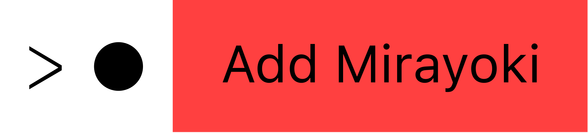

psst psst...
hey
you may be wondering what a QR code does around curry’s bathrooms/classrooms.
i would like to show you something
hey there!
just like you, I am a curry student. maybe you have seen me. maybe we have talked or even eaten lunch together.
today, I really put on a lot of effort to share this with you.
since COVID began I started a software project on my free time that I have put on a lot of work and I think its time for it to see daylight.
this project is a discord bot called Mirayoki. it uses the latest techonologies to deliver epic experiences in a ridiculous short time.
it also lets you manage your discord server directly from the message box (no more confusing websites!) and uses brand-new Slash (/) commands (pretty cool, huh?) for the absolutely affordable price of 0 dollars
after a few years of developing it, i think it is time for the world to see what a small yet powerful bot can do.
and I really wanted to share it with my school community first since I know most of us use discord on a daily basis :)
if you want, and feel like it, add Mirayoki to your discord server and try it out.
i really hope you like it and enjoy it <3
if you have more questionsss ☟
mirayoki can replace the trio (or group) of bots you have to ban, mute, have fun and be goofy (ok maybe not the music one yet).
It is an all-in-one solution. you will be the first to use a next generation bot that uses cluster AI and you will be helping your fellow local classmate to develop more amazing things.
cluster AI?
it is the engine that lets mirayoki be insanely fast. it can make choices by approximating the time a task would take to be done, and relays queries to other servers in case it is busy.
if i'm not wrong, this is the first use of such AI in a Discord Bot
yes! si! oui! 100% free for everyone!
it also costs you absolutely nothing to try it out üòâ
every time I wish to update mirayoki, it goes over a thousand checks and revisions to make sure there are no security vulnerabilities or viruses.
plus, discord checks periodically for security issues in bots (and Mira has been online for some years now).
mirayoki collects no personal data about you or your server. i don’t even care about what you do with it.
errors and crashes are reported to me but i recieve no more information other than what time was it and why happened (on a code level)
btw, if you ever find out who am I, feel free to pop and say hi üëãüèΩ
i would really like to know that someone actually took the time to read this, and who knows...?
maybe you'll get another surprise as well üòâ